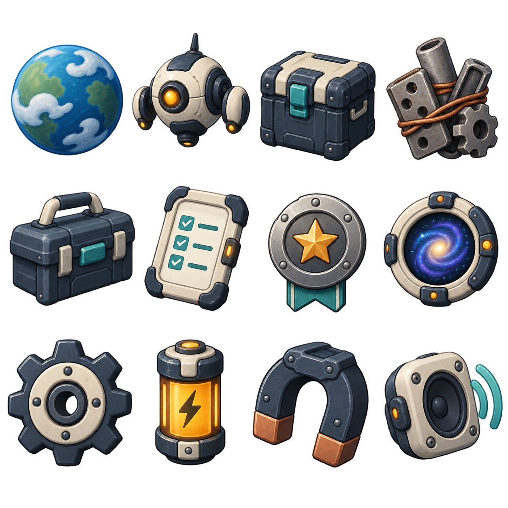
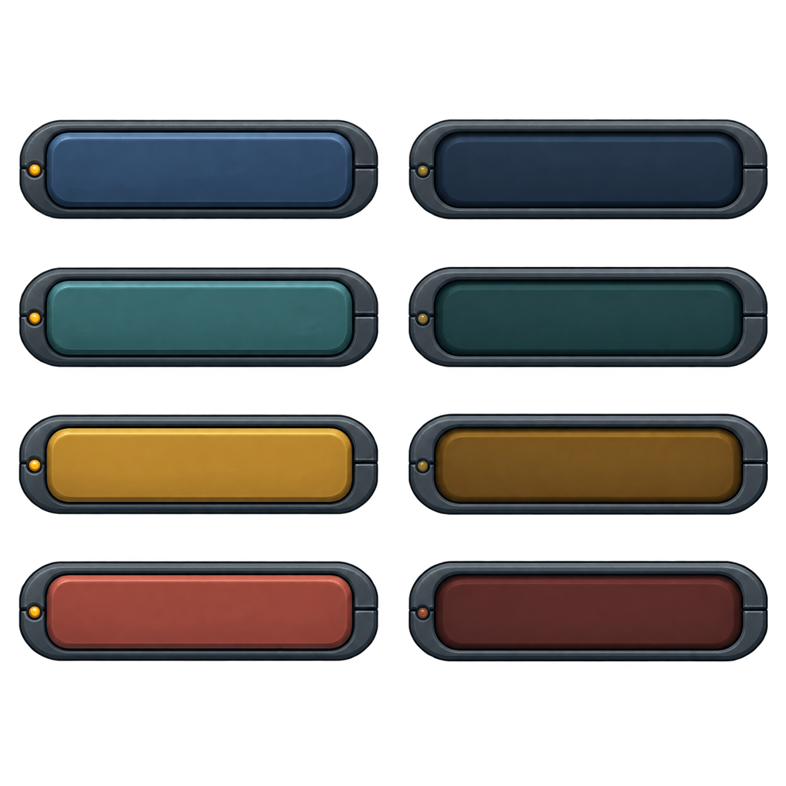
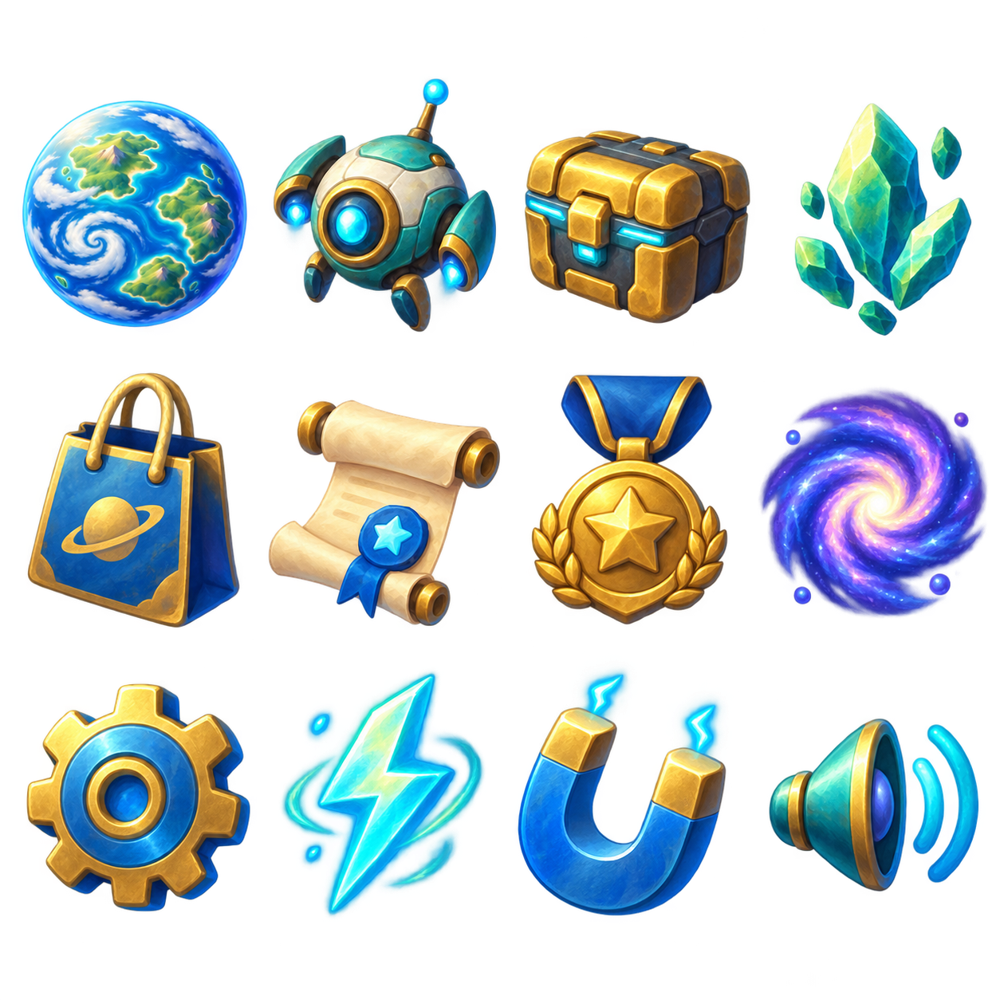
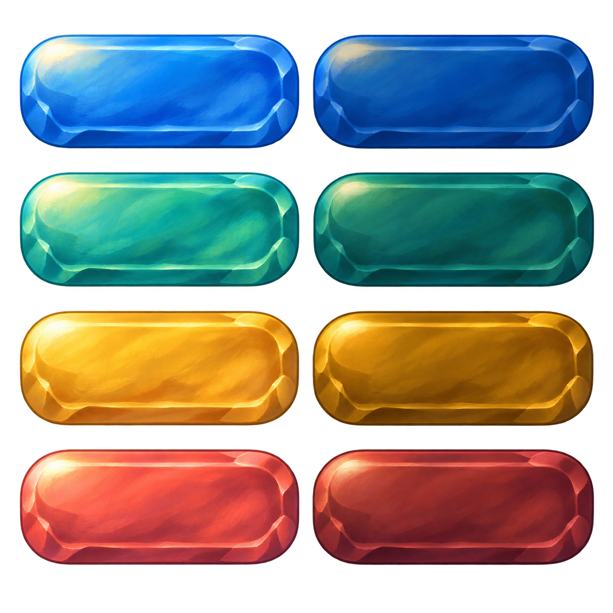

Оборудование космического корабля
Матовый металл, кремовая эмаль, бирюзовые детали и янтарные индикаторы. Рисованные формы и мягкий свет.
12 иконок

Кнопки пульта
Слева обычное состояние, справа нажатое. Подписи добавляются интерфейсом.

Сравнить с первым вариантом


PNG с прозрачным фоном сохранены рядом. Создано встроенным image_gen. В приложение пока не подключено.
Полные запросы генерации